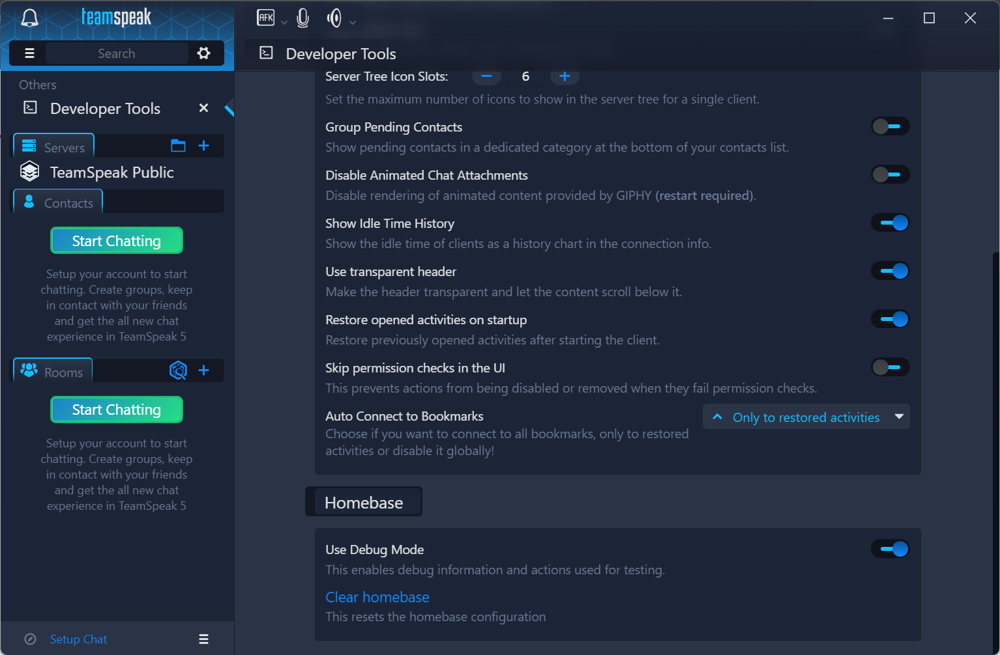
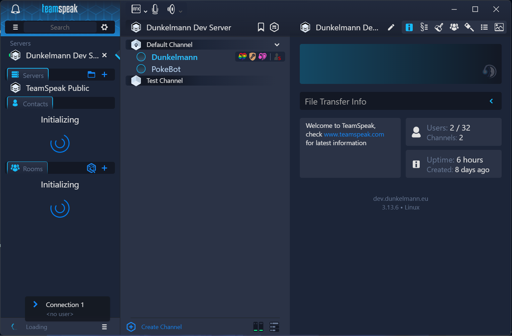

Step 5
Now fill out the form below.
https://

Enter "Dev" in the top left search bar and click on "Developer Tools". There you need to enable "Debug Mode", which simplifies some steps and allows you to temporarily switch your homebase without actually harming your main chat account. After you've enabled debug mode, you will see a hamburger menu next to your chat name in the bottom left corner (in the Screenshot below it'll say "Setup Chat", but don't worry about that).
Connect with the TeamSpeak Server. If you click on the hamburger menu, you'll see that a new chat connection has appeared, but it won't work yet as the client does not know the login information yet.

Disconnect from the Server and close your TeamSpeak Client.
Now head to %LocalAppData%\TeamSpeak\Logs\Default (on Windows)
and open tschat.log. Scroll to the bottom and search for a line
that contains something like [info] Save data path: host=https://dev.dunkelmann.eu specifier=[YOUR_TS_IDENTITY] => C:\Users\[USERNAME]\AppData\Local\TeamSpeak\Cache\Default\tschat\Yzg1NzczOWExNTZjZDk5NmQwMTc2NTcwYTBhNTAyMTg.
Remember the file path after the => arrow and the host-Value (later referred to as tschat File and Matrix Host). you'll need this information later on.
Reopen your TeamSpeak Client and reconnect to the Server.
Poke the PokeBot TeamSpeak Client to aquire a Chat Login Token. The Bot
will send you a private message, so double click on the Bot after you've sent the poke.
The message contains the token you'll need in the next step, so it's a good idea to copy
it. Attention: The Token is only valid for 5 minutes, so you'll
need to be quick to use it in the next step or read the whole instructions before
you try it yourself!
Now fill out the form below.